Página de prueba
Accesibilidad
5.2.3 Técnicas para satisfacer los requisitos definidos en las WCAG
Técnicas Generales
- Añadir alternativas de texto a elementos multimedia.
- Permitir que el contenido pueda ser pausado.
- Ordenar el contenido de forma coherente.
- Añadir títulos descriptivos.
- Expandir abreviaturas.

- Eliminar parpadeos y destellos.
- Marcar la estructura de las tablas de datos(thead, tbody y tfoot).
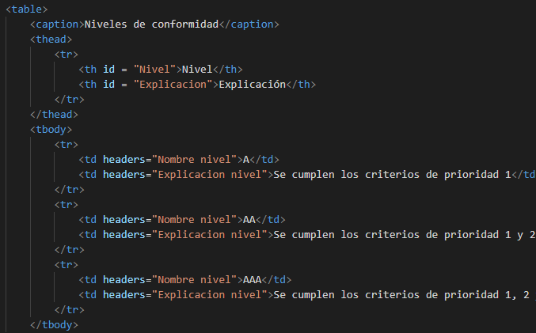
- Proporcionar metadatos que den significado al documento.
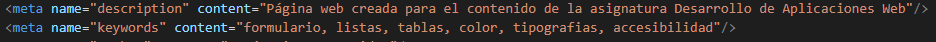
- Utilizar atributo for del elemento label
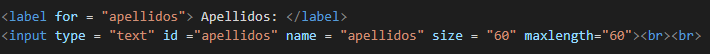
Técnicas CSS
- Utilizar CSS para controlar el espaciado (margin y padding)
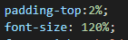
- No utilizar unidades relativas.
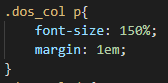
- Modificar los elementos al recibir el foco con el psudocase: focus.
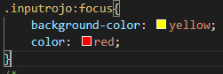
- Utilizar valores porcentuales.
- Usar ojas de estilo vinculadas
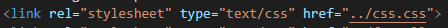
- Utilizar propiedades como font-size.
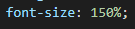
- No utilizar elementos blink.
- Usar números en vez de nombres para especificar colores.
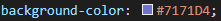
- Especifique un tipo de letra genérico por defecto.
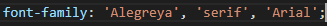
- Asegurarse de usar colores con alto contraste entre el fondo y el primer plano.
Técnicas Aria
- Utilizar el atributo aria-label para etiquetar objetos.
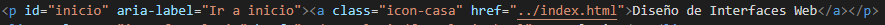
- Utilizar el atributo aria-describedby en los controles de interfaz de usuario.
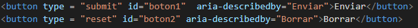
- Utilizar el atributo aria-required para campos requeridos.
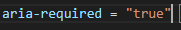
- Utilizar el atributo aria-role para indicar el rol de un control y agrupar controles en grupos.
- Utilizar las aria landmarks para poder establecer regiones de una página.
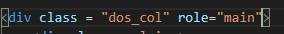
Errores comunes
- No utilizar texto alternativos mediante alt.
- Usar textos alternativos muy largos.
- Publicar videos visuales sin alternativa de texto.
- Usar únicamente color para establecer jerarquías.
- Usar tamaño de los textos en medidas absolutas.
- No se indica el lenguaje de la página mediante el atributo lang.
- Entradas sin equiqueta label asociada.
- Imágenes decorativas no marcadas como tal.
- No informar al usuario de errores en la introducción de datos de entrada (aria-describedby).
- Utilizar links vacíos, sin atributo alt.